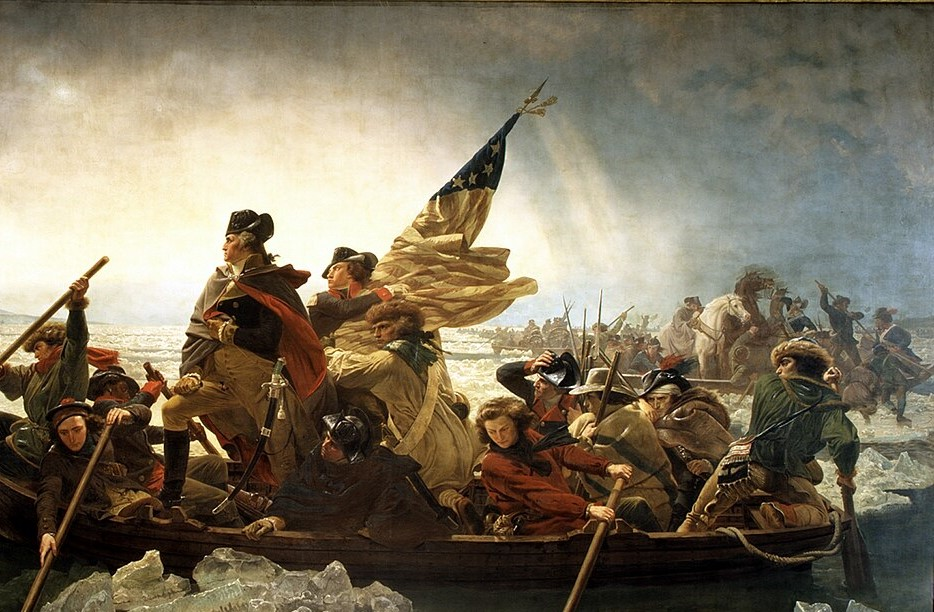
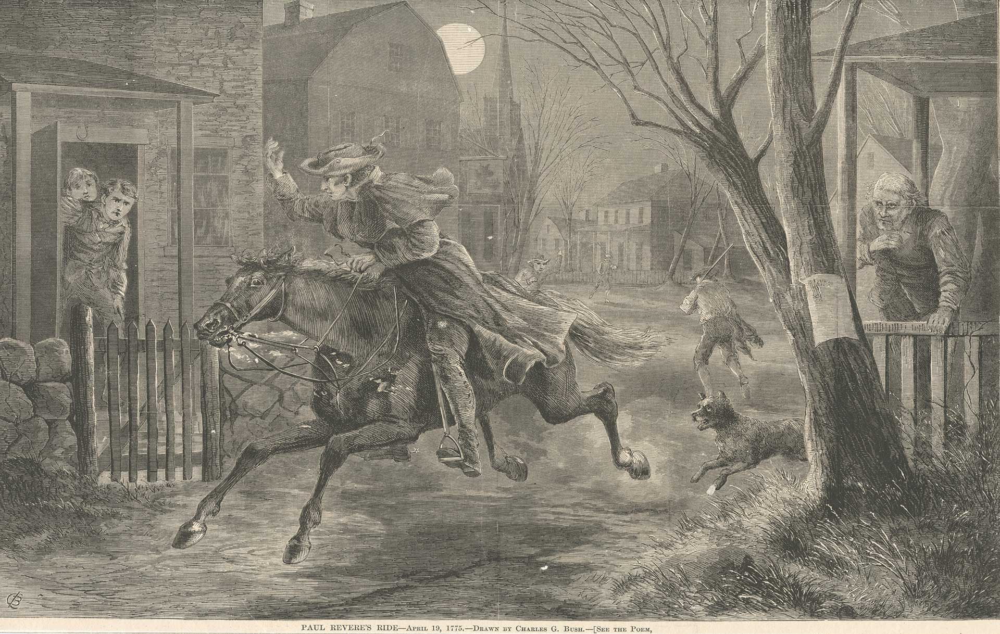
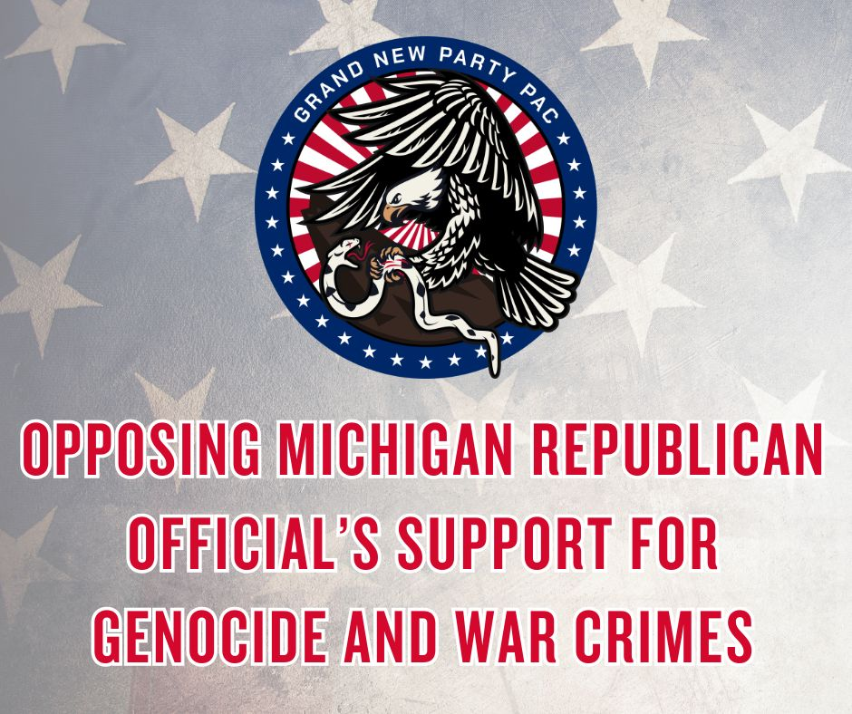
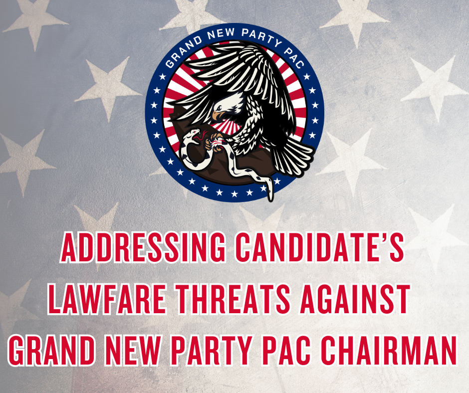

Organize
Build the grassroots
Train activists, recruit precinct delegates, and connect local leaders into a serious statewide network.
Explore
Organizing Michigan conservatives to renew the Republican Party, hold power accountable, and restore government of, by, and for the people.
The Grand New Party PAC builds the people, pressure, and political infrastructure needed to make conservative principles govern again.
Train activists, recruit precinct delegates, and connect local leaders into a serious statewide network.
ExploreSupport Michigan candidates for the state legislature, county commission, and school boards.
ExploreChallenge political corruption, expose backroom pressure, and hold Republican officials to conservative principles.
Explore
The Contract with Michigan is a direct demand for courageous representation, grassroots power, and an end to passive, lobbyist-driven politics.
A full agenda for limited government, transparent institutions, economic freedom, secure elections, and the dignity of Michigan families.
Put citizens ahead of entrenched interests and let families keep more of what they earn.
Reject emergency rule and defend constitutional freedoms without apology.
Demand transparent procedures, accountable systems, and meaningful oversight.
Defend parental rights and the dignity, safety, and future of Michigan children.
The delegate is the foundation of a member-driven Republican Party. GNPPAC is recruiting and supporting precinct warriors ready to protect grassroots authority.
Become a precinct delegate

GNPPAC calls for responsible, America First leadership and rejects rhetoric advocating indiscriminate violence against civilians.
Read statement
Chairman Shane Trejo responds to threats of political lawfare and defends the right to criticize public officials and candidates.
Read statementA call for party accountability, delegate rights, and a broader America First coalition inside the Michigan Republican Party.
Read statement